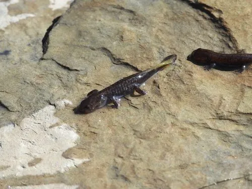

两栖动物 · 动物界
山溪鲵 Batrachuperus pinchonii

中国西南高山区的小型有尾类，终生生活在清凉溪流中，因被当作药材捕捉而数量下降，需注意保护。
- 分类
- 门脊索动物门纲两栖纲目有尾目科小鲵科属山溪鲵属
- 栖息环境
- 高山清凉的溪流、泉水、冷水潭与石缝间
- 地理分布
- 中国四川西部、云南西北部、甘肃南部的高山溪流
- 保护级别
- IUCN 易危（VU）；中国未列入国家重点保护名录
物种志
山溪鲵体长 15–20 厘米，头部扁圆，吻端钝，眼睛小，皮肤光滑湿润，背面呈灰褐或橄榄褐色并带有深色斑点，腹面浅黄；四肢短而粗，尾部侧扁，善于在溪流石缝间游动和躲藏。它终生生活在水中，用皮肤和肺呼吸，对水温和水质要求较高。
它分布于中国四川西部、云南西北部及甘肃南部的高山溪流，栖息于海拔较高的山溪、泉水与冷水潭中，夜间捕食水生昆虫、钩虾、小鱼和蝌蚪。每年 3–5 月繁殖，雌体在石缝中产下卵袋，每个卵袋含卵 10–20 枚，幼体有外鳃，约 1–2 年后完成变态。它因民间药用被称为“羌活鱼”，长期被捕捉入药，加上溪流污染和生境破坏，野外数量下降；目前被列为易危物种，需要加强保护。
形态与习性
- 食性水生昆虫、钩虾、小鱼和蝌蚪
- 体长15–20 cm
- 寿命约 8–15 年
- 繁殖卵生，每卵袋 10–20 枚，约 1–2 年完成变态
- 活动节律夜行性，多藏在水下石缝中
- 特点终生水生，对水温和水质要求高
趣味知识
- 山溪鲵终生生活在水里，靠皮肤和肺呼吸，很少离开溪流。
- 民间把它当作药材称为“羌活鱼”，长期捕捉导致数量下降。
- 山溪鲵对水温和水质十分敏感，可作为山地溪流环境的指示物种。